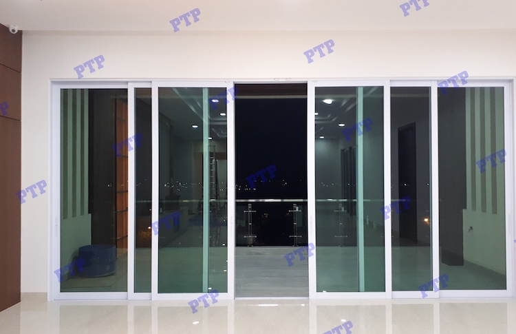
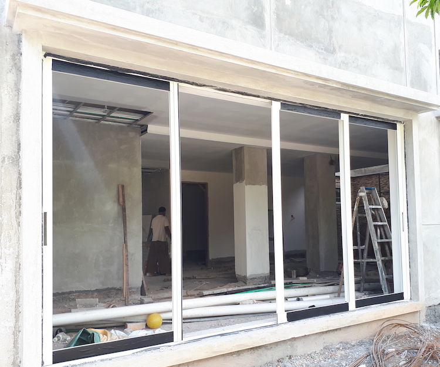
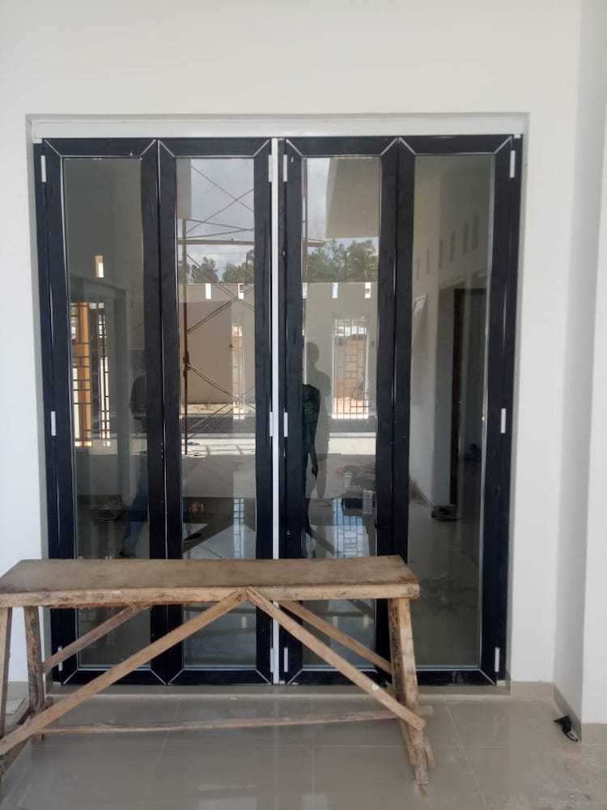
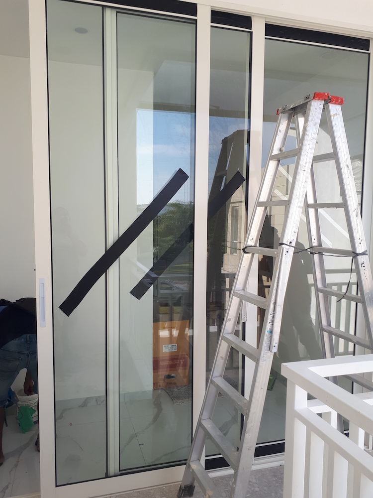
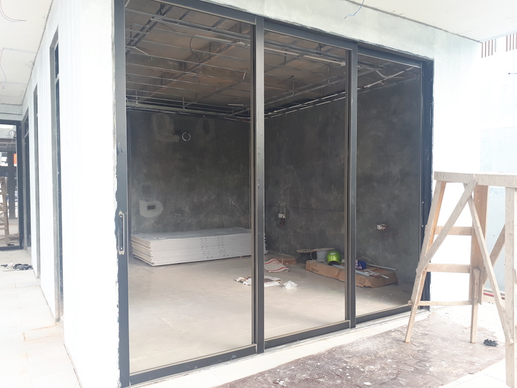
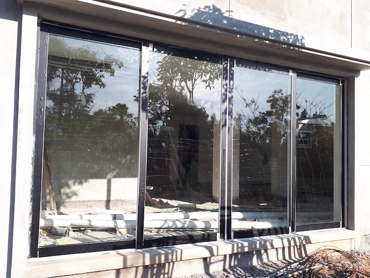
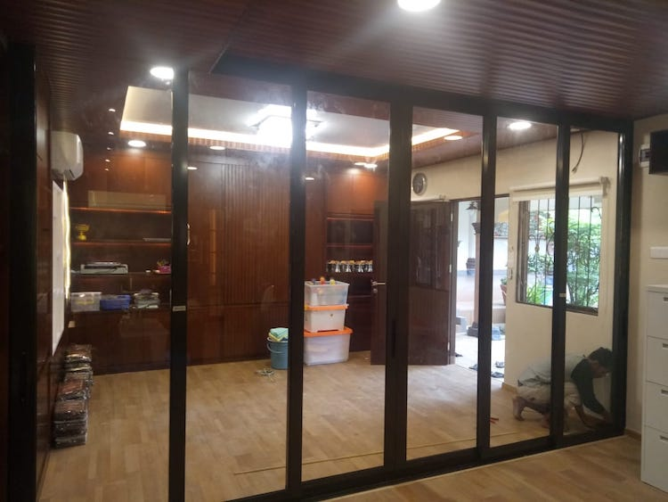
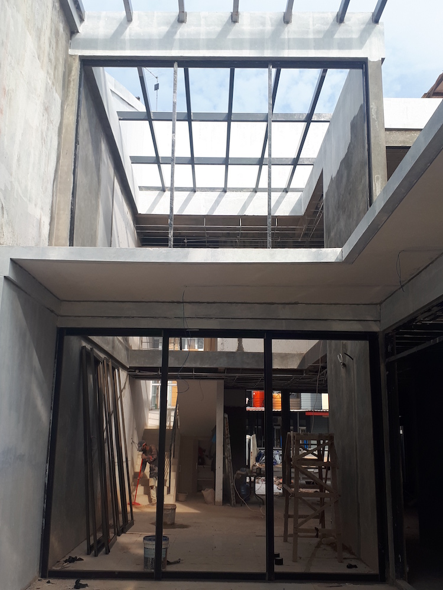
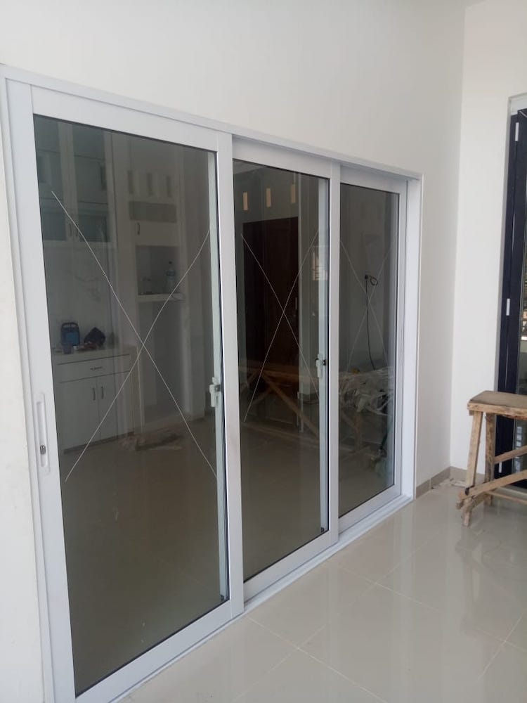

Sliding 01Referensi pintu geser dengan tampilan bersih.
Halaman ini menggantikan versi WordPress untuk kategori sliding doors. Galerinya merangkum berbagai contoh pintu geser Rambuncis dan menampilkan referensi visual yang lebih mudah dinikmati saat dibuka dari HP maupun desktop.

Sliding doors cocok dipakai saat ruang perlu terasa lapang tanpa kehilangan kesan modern dan teratur.










Hubungi 0813-6480-4864 kalau Anda ingin solusi bukaan ruang yang efisien tapi tetap tampil rapi dan modern.